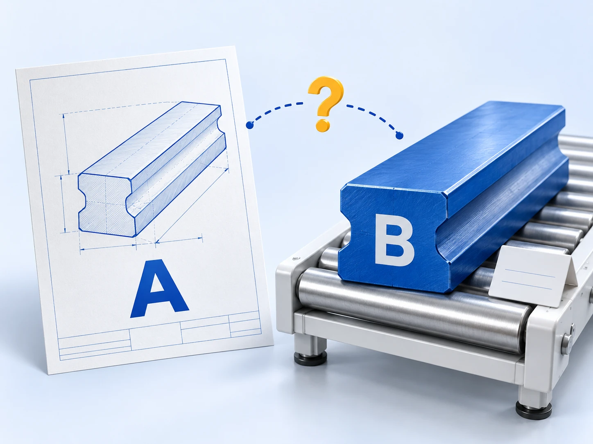

01 / CHECK辅导 · 尽调
数据里，究竟哪里有问题？
数据体检
交叉检查 ERP、MES、财务与业务记录，定位对不上的环节，评估影响范围。
带走什么风险体检报告
查看体检交付 ↗问题清单 · 具体定位 · 治理建议
传神智溯 · IPO 数据服务
从提前发现疑点，到还原历史成本，
再到准备问询证据。
把说不清的数据，变成可复核的依据。
面向拟 IPO 制造企业 · 券商项目组
01 / 按项目阶段，选择服务
先查清问题，再确定投入。
三款产品可单独选择，也可衔接使用。
数据里，究竟哪里有问题？
交叉检查 ERP、MES、财务与业务记录，定位对不上的环节，评估影响范围。
问题清单 · 具体定位 · 治理建议
历史成本，怎样重新算清？
梳理编号、配方、工单与价格，先核清数量，再逐级计算成本，形成可复核明细。
三年明细 · 调整留痕 · 可重跑规则
问到这个数字，拿什么解释？
把具体问询拆成数据问题，追到来源单据、计算规则与中间结果，准备有据可查的底稿。
问题拆解 · 来源证据 · 数据底稿
体检后，企业可自行整改，也可继续治理。已有明确问询的项目，可先评估所需的数据范围。
02 / 从业务难题出发
多层加工、半成品、委外环节交织。
选一个熟悉的问题，看看矛盾出在哪里。
01 / 多套编号
采购、生产、财务各用一套编号，同一物料的记录难以串联核对。
采购 MAT-028·生产 YL-028A·财务 000028
03 / 为什么用 AI
百万行记录，跨年度、多层加工。
难点在于追查成因、反复验证，
再让同一套规则贯穿整条业务链。
从一处用料差异开始

是录错了、临时替代，
还是编号不同的同一种料？
对照工单、领料与配方，找到 A 缺失、B 多出的关联。
推断是否存在替代用料，写成有条件、可检查的规则。
程序重算数量与成本，检查守恒、计价和替代关系约束。
价差异常就重新追查，排除不成立的关系，修正规则再验证。
关键事实与口径由专业人员确认；程序执行并保留调整依据。
读诊断、串联单据、提出处理方案，再根据结果持续修正。
先核清数量，再计算金额；同样数据与规则，重跑结果一致。
企业和会计师确认关键业务事实与计价依据，未解释差额单独列明。
04 / 每款产品，都有明确交付
选一款服务，看看实际会拿到什么。
以下为交付结构示意，非真实客户数据。
检查采购、入库、领料、配方、生产、库存与财务之间的勾稽关系，定位数据疑点与影响范围。
定位到期间与品号 → 核查采购单价、暂估及后续调整。
核对替代用料、配方版本与跨月工单。
保留检查范围、结果与依据，供后续复核。
编号、配方、工单与价格逐项梳理。
交付三年逐品号明细，也交付每笔调整的来路。
AI 将具体问询拆成数据问题，程序调用规则与台账取数、重算，整理数据表和说明。
售价、材料、人工、制造费用
关联销售、领料、工单、入库记录
来源单据 + 规则版本 + 中间结果
解释表、依据清单、待确认事项
已完成治理的项目可复用规则与台账。未做过治理，也可评估针对性还原；周期与投入取决于涉及范围。
清晰，也意味着有边界
企业数据与大模型均在本地算力服务器运行。
基于已有数据开展治理，无需更换系统或新增 ERP 模块。
提供可复核的数据依据；会计口径与审计结论由相关专业主体负责。
05 / 数据治理 · 已交付案例
单年源数据规模
最深加工层级
数量调整，每条均留有依据
此前尝试 ERP 软件层面方案一年未完成。配方、工单、编号与价格问题彼此交织。
每年识别 4,000 余条替代用料关系；用成本结果反查不成立的判断，先核数量，再算金额。
三个年度完成项目交付校验。每笔调整保留依据，规则与台账可供后续复核及问询使用。
以上为服务资料披露的单个数据治理案例，统计范围为本项目；不代表其他项目的周期、效果、审计结论或 IPO 结果。
06 / 开始合作
企业与券商项目组共同沟通。
先明确要查什么、解决什么，
再约定范围、工期与费用。
提供现有系统、数据范围与已知问题。
选择体检、治理或问询响应，明确范围与交付要求。
约定服务方式、进度与费用，按合同实施。
参考周期：约 3—4 个月
方案参考周期，实际取决于数据规模、复杂度及确认进度，以项目评估为准。
按项目报价
根据实际数据量、复杂程度与交付范围评估。
按月服务：参考 15 万元 / 月
按实际服务月数结算；最终费用与服务范围以合同为准。
以上仅适用于数据治理。数据体检、问询数据响应的周期与费用，按具体范围另行评估。
不必。体检先明确问题、影响范围与处理建议。没有重大问题，或企业可自行整改的，无需继续购买治理。三款产品可单独选择，也可组合使用。
可以先评估问询涉及的数据范围。必要时先做针对性还原，周期与费用随范围变化。已完成治理的项目，可以复用已有规则集与调整台账。
计算之前，需要先弄清矛盾成因：是替代用料、同物多码、跨月工单，还是计价单位错配。AI 结合单据和诊断结果提出判断、形成候选规则，并根据试算与校验结果修正；程序负责逐笔计算。企业与会计师确认关键业务事实和口径。
最终金额由已确认的规则程序计算，保留来源说明、调整前后与执行依据。同样数据与规则支持重跑复核。推断和规则也需要验证，无法解释的差额单独列明，不以模型回答代替计算依据。
服务提供问题拆解、来源证据、计算过程和数据底稿，供券商、会计师撰写问询回复；回复内容与专业判断仍由相关主体负责。
可以结合已有成果评估。传神智溯从数据层面处理单据矛盾，与 ERP 互补，不要求更换系统或新增 ERP 模块。
企业主要提供已有系统数据，配合确认关键业务事实与口径。服务采用非驻场方式，具体投入取决于数据质量、涉及范围和项目约定。
采用本地算力服务器部署，企业数据与大模型均在本地运行，业务数据在企业内网处理。具体部署安排由项目方案明确。
主要面向拟 IPO 制造企业；已披露案例属于多层加工制造业的数据治理服务，其他企业可先评估适用性。服务提供数据依据，不替代审计，不承诺 IPO 审核结果。
七张海报 / 一个完整故事
三产品总览、AI 解题、数据体检、数据治理、问询响应、客户实践与合作。可逐张讲解，也可下载整套分享。
让数据清晰，让沟通有据。
从您的数据问题开始 ↗